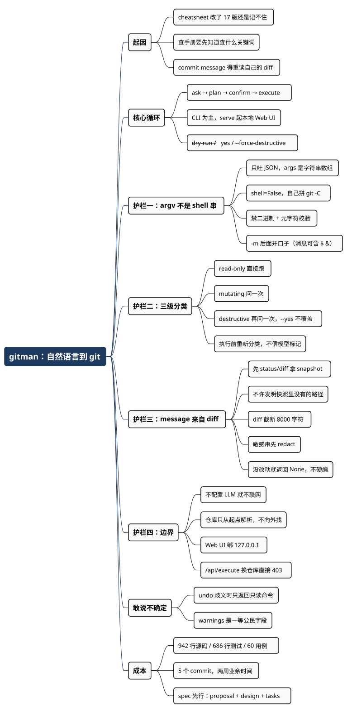

我写过 git cheatsheet，还是记不住——于是写了 gitman
Posted on 二 01 9月 2026 in Tech
| Abstract | 我写过 git cheatsheet，还是记不住——于是写了 gitman |
|---|---|
| Authors | Walter Fan |
| Category | learning note |
| Version | v1.0 |
| Updated | 2026-09-01 |
| License | CC-BY-NC-ND 4.0 |
大纲
展开看看
- cheatsheet 治不好的病：查手册的前提是你知道要查什么关键词
- gitman 是什么：自然语言 → 计划 → 确认 → 执行，CLI 加一个本地 Web UI
- 四道护栏：argv 不是 shell 串、三级危险分类、commit message 来自 diff、默认不联网
- 一个真实的坑：
git rm那个 commit 是怎么来的 - 让 LLM 学会说“我不确定”：歧义时只返回只读命令
- 小工具的账：942 行代码、686 行测试、5 个 commit
- 可以直接抄的 checklist
我在自己的 wiki 上有一篇 git tips，从工作区暂存区仓库区讲到 submodule、subtree、filter-branch，改了 17 版。写的时候很爽，觉得从此江湖再无难题。
然后每隔几个月，我还是要打开它翻一遍。删远程分支到底是 git push origin --delete 还是 :branchname？想把最近两个 commit 合成一个，rebase -i HEAD~2 之后是选第一个还是第二个改成 squash？子模块换地址要不要 sync --recursive？
cheatsheet 没治好这个病，因为查手册有个前提：你得先知道要查什么关键词。 而我脑子里当时只有一句大白话——“我想把这两个提交并成一个”。从这句话到 git rebase --interactive HEAD~2，中间那一步翻译，恰恰是最费劲的。
再加上写 commit message。改完一堆文件，回头要给它起个名字，还得符合 conventional commit 那套 feat: / fix: / refactor: 的规矩，这活儿说不上难，就是烦——你得重新读一遍自己的 diff，才能诚实地概括它。
所以我写了 gitman。一句话：你说人话，它出计划，你点头，它才动手。
但这篇文章想讲的不是“接个 LLM 真神奇”。接 API 是最简单的部分，两百行就够了。真正花时间的是另一件事：当一个会瞎猜的东西拿到了你仓库的执行权，你得先给它焊几道护栏。
它长什么样
从任何一个 git 工作树里：
gitman "commit the staged changes" --dry-run
gitman "show status"
gitman ask "commit the refactor" --repo /path/to/repo
ask 是默认命令，所以 gitman "show status" 和 gitman ask "show status" 一样。输出是这样的：
$ gitman "show status" --dry-run
Summary: Show short git status
Commands:
1. git status --short
Dry-run: no git commands executed.
要提交的时候，它会先把命令序列和 commit message 摆出来，等你确认：
$ gitman "commit my changes"
Summary: Commit changes: docs: update README.md
Commit message:
docs: update README.md
Commands:
1. git add -A [mutating]
2. git commit -m docs: update README.md [mutating]
Execute this plan? [y/N]:
注意方括号里的 mutating。这个标记不是装饰，下面会讲它从哪来。
还有个 gitman serve，在 127.0.0.1:9626 起一个本地 Web UI，同样的 ask → plan → confirm → execute 循环，只是搬到浏览器里。端口被占就往后顺延到 9627、9628。
护栏一：LLM 只能吐 argv，不能吐 shell 字符串
这是整个工具最重要的一条约定。
让 LLM 生成一整行 shell 命令，然后 subprocess.run(cmd, shell=True)——这是注入风险最高的那条路。你的 diff 里但凡有一行文件名或者 commit message 长得像 ; rm -rf ~，模型又恰好把它抄进了输出，就完了。
所以 gitman 的契约是：planner 只能返回一个 JSON，里面 commands[].args 是字符串数组，不含 git 这个二进制名，不含 shell。 执行器自己拼 git -C <repo>，然后 shell=False。
{
"summary": "Stage Python files and commit",
"commands": [
{"args": ["add", "src/gitman"]},
{"args": ["commit", "-m", "<generated message>"]}
],
"commit_message": "feat: add gitman CLI planner",
"warnings": []
}
光有约定不够，模型是会跑偏的，所以还得在执行前做一次校验。safety.py 里那三十行是整个项目最值钱的部分：
FORBIDDEN_BINARIES = {"bash", "sh", "zsh", "python", "python3",
"curl", "wget", "sudo", "chmod", "chown", "kill", "dd"}
SHELL_META = re.compile(r"[;|&`$]")
def validate_git_args(args: list[str]) -> None:
first = args[0]
if first in FORBIDDEN_BINARIES or first == "git" or "/" in first or "\\" in first:
raise UnsafeCommandError(f"Rejected non-git command: {first}")
...
第一个参数必须是一个 git 子命令：不能是别的二进制，不能带路径分隔符，不能是 .sh 或 .exe。其余参数不许出现 shell 元字符。
这里有个小细节值得说：-m 后面那个参数要开个口子。commit message 里出现 $ 或者 & 太正常了（“fix: handle $HOME expansion”），如果一刀切，工具就没法用了。所以校验时先把所有 -m 的下一个位置记下来，跳过它们再查元字符：
message_indexes: set[int] = set()
index = 0
while index < len(args):
if args[index] == "-m" and index + 1 < len(args):
message_indexes.add(index + 1)
index += 2
continue
index += 1
因为 shell=False，这个参数会被原样当成一个字符串交给 git，元字符没有任何特殊含义。安全边界立在“不进 shell”这一层，不是立在“字符串里不许有奇怪符号”这一层。 这个区分很关键：前者是结构性的，后者是打地鼠。
护栏二：命令分三级，危险的那级要问两次
不是所有 git 命令都一样。git status 你闭着眼让它跑；git add 跑错了顶多重来；git reset --hard 跑错了，你今天下午白干。
所以 classify() 把命令分成三档：
| 级别 | 例子 | 需要什么 |
|---|---|---|
| read-only | status、log、diff、show、blame、rev-parse |
直接跑，不问 |
| mutating | add、commit、push、branch -d、stash |
问一次，或者 --yes |
| destructive | reset --hard、clean -f、push --force、branch -D、rebase、commit --amend、filter-branch、update-ref -d |
再问一次，或者显式 --force-destructive |
关键点在于 --yes 不能覆盖 destructive。脚本里图省事加个 --yes 是人之常情，但如果 --yes 能一路放行到 push --force，那这层分类就白做了。所以 destructive 单独要一个标志：
if destructive and not force_destructive:
destructive_confirmed = click.confirm(
"This plan includes destructive git commands. Continue?", default=False
)
default=False 也是有意的。手快按回车的默认结果应该是“不”。
还有一条容易被忽略的：分类要在执行的那一刻再算一遍，而不是信任 plan 里带过来的标记。 Web UI 那边尤其明显——/api/execute 收到的 plan 是从前端 POST 上来的 JSON，前端说自己是 destructive: false 完全不能信，所以服务端进来先 annotate_commands() 重新分类：
plan = annotate_commands(body.plan) # 不信前端传上来的标记
if any(cmd.destructive for cmd in plan.commands) and not body.destructive_confirm:
raise HTTPException(status_code=400, detail="Destructive command requires extra confirmation.")
这是老生常谈的“不要信任客户端”，但套在 AI 工具上还多一层：LLM 的输出也是客户端输入。 它标了 mutating: false 不代表这条命令真的无害。
护栏三：commit message 只能从真实的 diff 里长出来
这是我一开始就想清楚的一条，也是这个工具对我个人最有用的一条。
如果只把用户那句话（“提交一下我的重构”）丢给模型让它写 commit message，你会得到一条听起来很像样、但和实际改动对不上的消息。几个月后你 git log 翻回来，看到 refactor: improve code structure，一点信息都没有。
所以流程是反过来的：先在目标仓库里跑 git status --short、git diff、git diff --staged，把这个 snapshot 喂给 planner，再让它写。 系统提示词里有一条硬约束：
Never invent file paths that are not in the provided status/diff snapshot.
snapshot 本身也有几个约束：
- 有上限：diff 超过 8000 字符就截断，并在 warnings 里标注“Unstaged diff was truncated”，不给模型硬塞，也不给自己的 token 账单添堵。
- 先脱敏：进 prompt 之前过一遍
redact()，把形如api_key=xxx、token: xxx的键值对，以及ghp_、sk-、xox?-打头的 token 串换成<redacted>。 - 没改动就不编：
commit_message_from_snapshot()在changed_paths()为空时直接返回None，计划里就不会出现 commit 命令，只留一句 warning。
这三条里，我觉得最容易被忽略的是最后一条。一个愿意说“你没有东西可提交”的工具，比一个总能给你憋出一条 commit message 的工具靠谱得多。
一个真实的坑：git rm 是怎么被拦下来的
项目现在总共 5 个 commit，其中一个是 fix: allow git rm --cached while blocking destructive rm。
背景是这样：你删了一个文件，然后跟 gitman 说“把这个删除提交上去”。模型很自然地会想到 git rm <path>。问题是——文件已经在磁盘上被删掉了，此时正确的做法是 git add -A 或者 git add <path>，让 git 记录这次删除。 而 git rm 会去删工作区里的文件，你以为在暂存一个删除，它在执行一个删除。
大部分时候结果一样，但只要模型把路径搞错一个字符，你丢的就是一个本来好好的文件。
修法是两头堵。planner 的系统提示词加了三行：
To stage a deleted file, use `add -A` or `add <path>` instead of `rm`.
`rm` is only allowed with `--cached` (unstage/untrack without touching the
working tree); plain `rm` is always rejected because it deletes files on disk.
safety.py 里再加一道兜底，并且把错误信息写成能直接照着做的样子：
if first == "rm" and "--cached" not in args[1:]:
raise UnsafeCommandError(
"Rejected `git rm` without --cached: it deletes the file from your working "
"tree, not just the index. Run `git rm --cached <path>` to only unstage/untrack "
"it, or delete the file yourself and run `gitman` again to commit the removal."
)
提示词是软约束，代码是硬约束，两个都要有。 提示词负责让模型大部分时候做对，代码负责让它做错时不出事。只信提示词，等于把安全建立在“模型今天状态不错”上面。
顺便说一句，这条错误信息我特意写长了。CLI 工具最气人的就是甩你一句 Rejected: rm，然后你得去读源码才知道该怎么办。既然拦了，就顺手告诉人家下一步怎么走。
护栏四：默认不联网，仓库也不许走错
两条边界，一句话就能说清，但都是踩过坑才会当回事的。
不配置就不联网。 GITMAN_LLM_BASE_URL 和 GITMAN_LLM_MODEL 没设的时候，ask 直接失败并给出配置说明，不会退化成“先跑几条命令看看”。你的私有仓库 diff 不会因为你手滑跑了个命令就飞到某个 API 上去。想用本地模型？把 base URL 指向 Ollama 就行，代码不用改。
GITMAN_LLM_BASE_URL="http://127.0.0.1:11434"
GITMAN_LLM_MODEL="qwen2.5-coder"
.env 也支持，cwd 和目标仓库各找一次，已经设好的环境变量优先——这样你可以给不同项目配不同模型，而临时用环境变量覆盖依然有效。
仓库只从起点解析。 resolve_repo() 从 cwd 或者 --repo 出发跑一次 git rev-parse --show-toplevel，不在里面就直接退出，绝不去兄弟目录或者什么全局配置的项目根里碰运气。
result = _run_git(probe, ["rev-parse", "--is-inside-work-tree"])
if result.returncode != 0 or result.stdout.strip() != "true":
raise NotAGitRepoError(f"No git repository found at {probe}")
Web UI 那边更严一点：serve 启动时锁定一个仓库，/api/execute 如果收到一个不同的 repo 路径，直接 403。一个能被 HTTP 请求换掉目标仓库的本地服务，等于在你机器上开了个洞。
顺带一提，UI 默认绑 127.0.0.1 而不是 0.0.0.0。你的 git 元数据和 diff 不该在局域网里裸奔。
让 LLM 学会说“我不确定”
这一条我觉得比前面所有护栏都更有普适性。
用户说“undo”。撤销什么？工作区的未提交改动，还是最后一次 commit？如果两样都存在，这句话就是歧义的——而这两个操作的后果差得非常远。
大多数工具在这里会挑一个它觉得最可能的执行掉。gitman 的选择是：返回只读命令加一条 warning，什么都不改。
if text in {"undo", "undo that"} and snapshot.has_changes and snapshot.has_head:
return Plan(
summary="Ambiguous undo: inspect first",
commands=[GitCommand(args=["status", "--short"])],
warnings=[
"Both uncommitted changes and a HEAD commit exist. "
"Say whether to discard working-tree changes or undo the last commit."
],
)
系统提示词里也写了同样的规则，让远端模型照做：
If the request is ambiguous (for example "undo" when both uncommitted changes and a HEAD commit exist), return only read-only inspection commands and a warning; do not mutate.
Plan 这个模型里专门留了 warnings: list[str] 字段，就是为了让“我不确定”成为一个一等公民的返回值，而不是塞在 summary 里的一句客套话。
AI 工具的可信度，很大程度上取决于它敢不敢说“这句话我没听懂”。 一个永远给你答案的助手，你迟早会发现它有一半答案是编的；一个会停下来反问的助手，剩下那些答案你才敢用。
这个工具花了多少
我把账摊开，因为这决定了值不值得自己写：
| 项 | 数字 |
|---|---|
| 源码 | 942 行（src/gitman/ 全部 Python） |
| 测试 | 686 行，60 个用例，全绿 |
| commit 数 | 5 |
| 跨度 | 8 月 17 日到 9 月 1 日，业余时间 |
| 依赖 | click、fastapi、httpx、pydantic、uvicorn、python-dotenv |
测试和源码的比例接近 3:4，这不是我勤快，是这类工具的必然：一个会执行 git 命令的程序，你不敢靠手动测试放它出门。 CI 里没有 LLM，所有 planner 相关的测试都走一个 FakePlanner，配合临时 git 仓库跑真实的 git 二进制。60 个用例覆盖 CLI 启动、计划解析、执行安全、commit message 生成、Web UI、端口选择、.env 加载，还有安装脚本本身。
GITMAN_PLANNER=fake 这个开关也留给了用户——想在没有模型的情况下摸一下手感，直接：
GITMAN_PLANNER=fake gitman "show status" --dry-run
另外这个项目是先写 spec 再写代码的。openspec/ 目录下有 proposal、design、tasks 和六份能力 spec，design.md 137 行，把每个决策的理由和被否掉的方案（Poetry、Go CLI、LangChain agent、让 LLM 直接吐 shell 脚本）都记下来了。在 AI 参与写代码的时代，这份文档的价值反而上升了：它是喂给 agent 的上下文，也是几个月后我自己回来看“当初为什么这么定”的唯一线索。
装的话一行：
curl -fsSL https://raw.githubusercontent.com/walterfan/gitman/main/bootstrap.sh | bash
它会把包装进 ~/.local/share/gitman/venv，把 gitman 命令链到 ~/.local/bin。要卸载就 ./install.sh uninstall。
可以直接抄的部分
如果你也在给 LLM 接一个能动真格的工具——不管是 git、kubectl、数据库还是文件系统——这几条我建议照抄：
-
让模型输出结构化数据，不要输出可执行文本。 argv 数组、JSON、参数对象都行，就是别让它吐 shell 字符串然后
shell=True。这一条能挡掉八成的严重问题。 -
在执行前重新分类，不信任模型给的标记。 模型说这条命令安全，那是它的意见，不是事实。危险等级由你自己的代码判定。
-
危险操作单独一个确认开关，
--yes不能覆盖。 一定会有人在脚本里写--yes，你要保证那时候push --force还是跑不了。 -
提示词和代码校验都要有，各管一头。 提示词提高成功率，代码兜住失败。只有前者是把安全押在模型状态上。
-
给模型的上下文要截断、要脱敏。 diff 设上限，secret 模式先 redact。你不知道对面的日志留多久。
-
默认不联网，配置才启用。 不要让用户在“不小心把私有代码发出去”和“工具能用”之间二选一。
-
给“我不确定”留一个正式的返回字段。 歧义时只返回只读操作加 warning，比猜一个执行掉强得多。
-
错误信息里写清楚下一步怎么办。 拦下来是本分，告诉人家该怎么绕过去才是本事。
总结：护栏比翻译更值钱
回到开头那个问题：为什么写了 cheatsheet 还是记不住。
因为记忆不是瓶颈，翻译才是——从“我想把这两个提交并成一个”翻译到 git rebase -i HEAD~2。这一步交给模型，它做得比我翻手册快。
但翻译本身不是这个工具的价值所在。接个 OpenAI 兼容 API 是两百行的事，谁都能做。真正需要动脑子的是另外七百行：当翻译错了的时候，会发生什么。
一个会猜的东西 + 一个会执行的东西，中间必须夹一层看得见、拦得住、能反悔的护栏。计划先打印出来，危险的问两遍，commit message 从真实 diff 里长，歧义时宁可什么都不做——这些约束不是为了防模型，是为了让我敢用它。
有意思的是，这些原则我一条都没发明。它们都是从写了二十年后端服务里搬过来的：不要信任客户端输入、不要拼字符串执行、危险操作要幂等要可回滚、默认关闭、失败要给出可操作的错误信息。
AI 时代的工程约束，和之前那一套并没有两样，只是“不可信输入”这一栏里，多了一项叫模型输出。
代码在 github.com/walterfan/gitman，Apache 2.0，一个九百多行的小工具，欢迎抄，也欢迎告诉我哪道护栏还漏了风。
全文思维导图
@startmindmap
<style>
mindmapDiagram {
node {
BackgroundColor #F8F9FA
RoundCorner 10
Padding 10
FontSize 13
}
:depth(0) {
BackgroundColor #1E3A5F
LineColor #1E3A5F
FontColor white
FontSize 18
FontStyle bold
}
:depth(1) {
FontSize 15
FontStyle bold
}
:depth(2) {
FontSize 13
}
}
</style>
* gitman：自然语言到 git
** 起因
*** cheatsheet 改了 17 版还是记不住
*** 查手册要先知道查什么关键词
*** commit message 得重读自己的 diff
** 核心循环
*** ask → plan → confirm → execute
*** CLI 为主，serve 起本地 Web UI
*** --dry-run / --yes / --force-destructive
** 护栏一：argv 不是 shell 串
*** 只吐 JSON，args 是字符串数组
*** shell=False，自己拼 git -C
*** 禁二进制 + 元字符校验
*** -m 后面开口子（消息可含 $ &）
** 护栏二：三级分类
*** read-only 直接跑
*** mutating 问一次
*** destructive 再问一次，--yes 不覆盖
*** 执行前重新分类，不信模型标记
** 护栏三：message 来自 diff
*** 先 status/diff 拿 snapshot
*** 不许发明快照里没有的路径
*** diff 截断 8000 字符
*** 敏感串先 redact
*** 没改动就返回 None，不硬编
** 护栏四：边界
*** 不配置 LLM 就不联网
*** 仓库只从起点解析，不向外找
*** Web UI 绑 127.0.0.1
*** /api/execute 换仓库直接 403
** 敢说不确定
*** undo 歧义时只返回只读命令
*** warnings 是一等公民字段
** 成本
*** 942 行源码 / 686 行测试 / 60 用例
*** 5 个 commit，两周业余时间
*** spec 先行：proposal + design + tasks
@endmindmap

本作品采用知识共享署名-非商业性使用-禁止演绎 4.0 国际许可协议进行许可。 欢迎在我的个人网站 https://www.fanyamin.com 访问原文并评论。